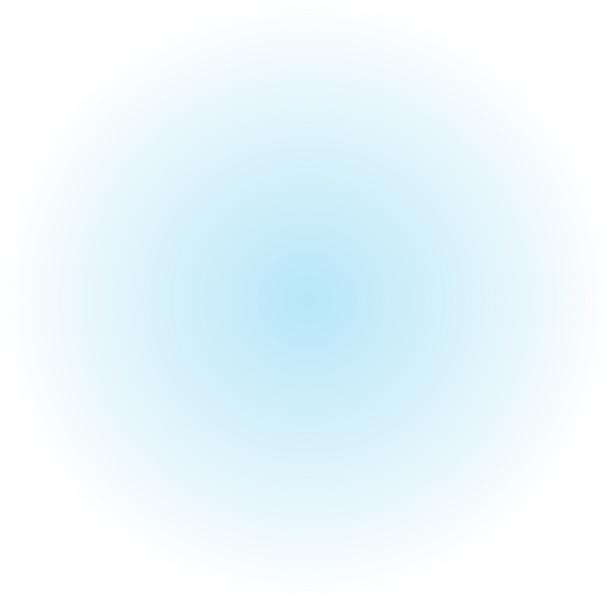

Поможем сохранить курс
Итоги недели, ваш прогресс ирекомендации будут приходить, дажекогда приложение закрыто. Управлятьуведомлениями можно в профиле.

Итоги недели, ваш прогресс ирекомендации будут приходить, дажекогда приложение закрыто. Управлятьуведомлениями можно в профиле.